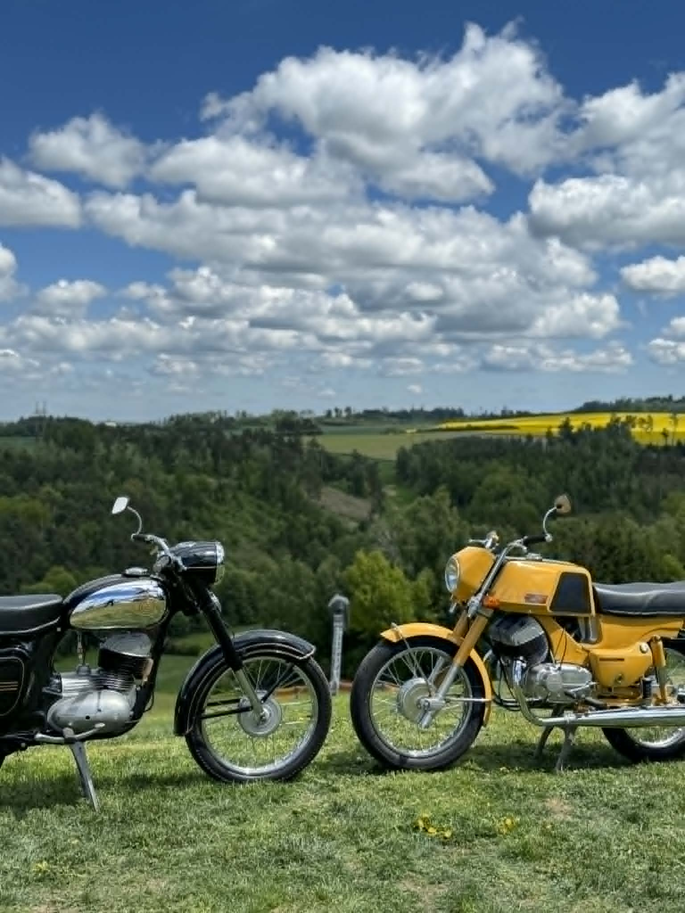
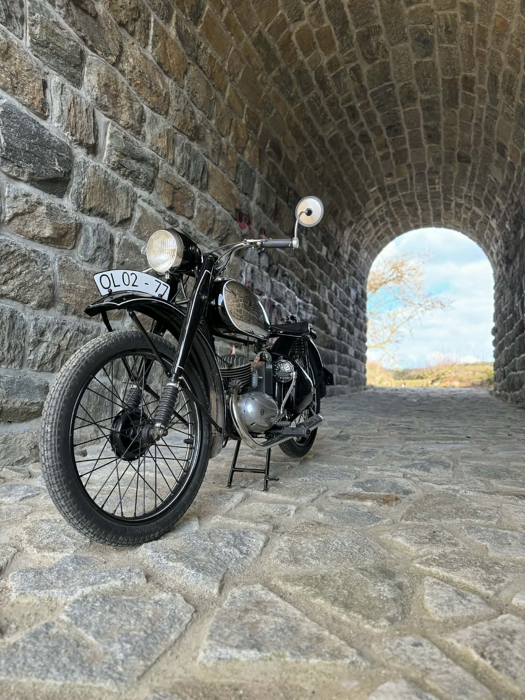
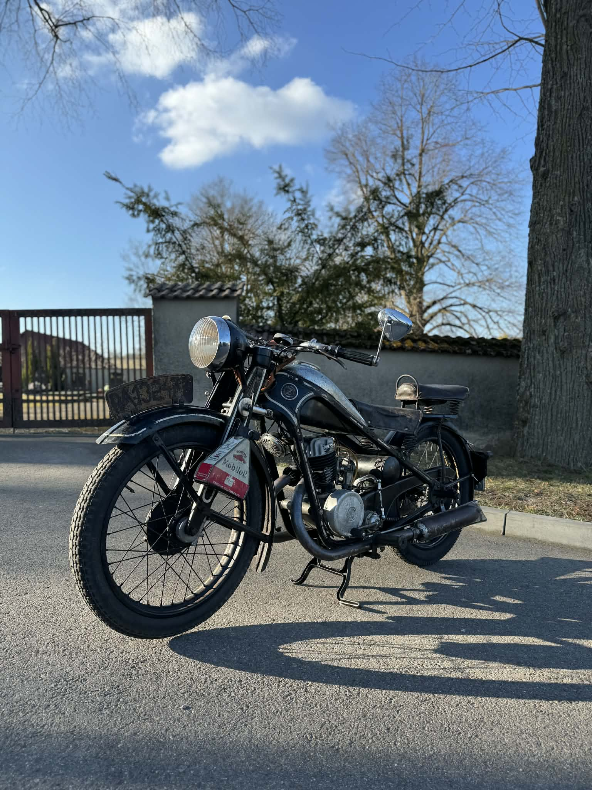
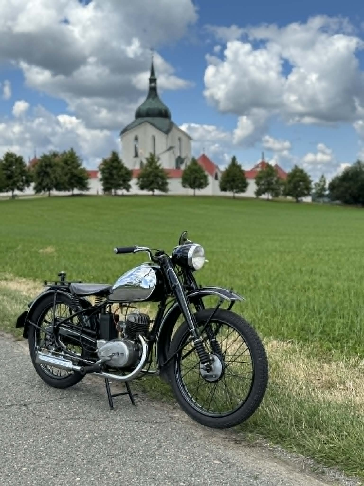
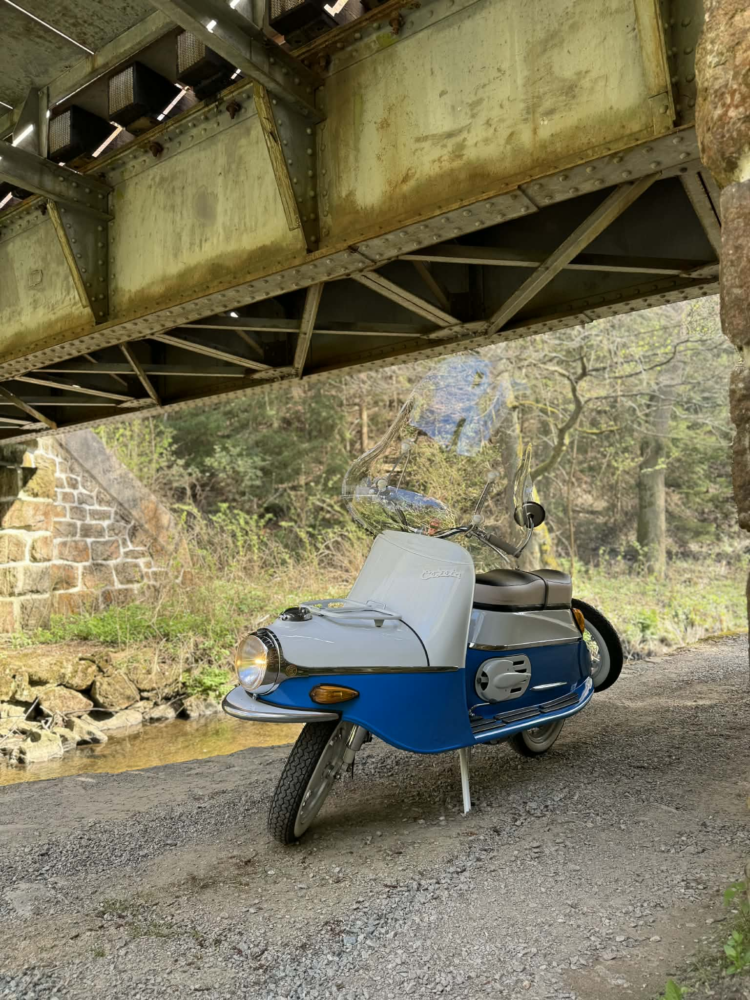
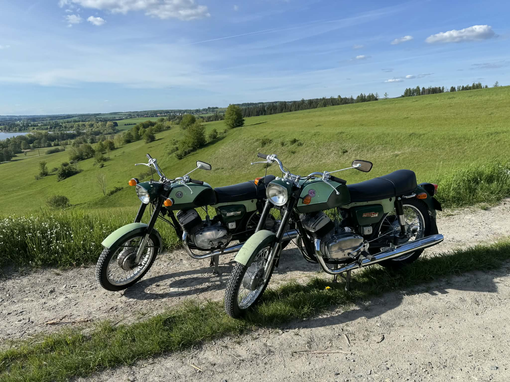

O mně
Jmenuji se Michal, je mi 29 let a motorky jsou mojí vášní už od dětství. Všechno začalo ve 12 letech, kdy jsem se poprvé začal prohánět na Pionýrovi.
Kolem 15 let jsem začal trávit čím dál víc času v dědově garáži. Právě tam jsem se začal v motorkách opravdu hrabat, poznávat jejich stavbu a postupně chápat, jak fungují.
Dnes motorky kupuji, opravuji, jezdím na výstavy, občas nějakou prodám a hlavně se snažím neustále zlepšovat. yní jsem se zaměřil na pomáhání ostatním motorkářům s opravami, výběrem dílů a rozjezdem vlastních projektů.
Oprava motorek
Nabízím pomoc s opravami, údržbou a základním servisem motorek. Ke každé motorce přistupuji individuálně.
Ať už jde o drobnou opravu, zprovoznění motorky po delší době, výměnu dílů nebo postupné skládání projektu, rád se na to podívám.
Shánění náhradních dílů
Sehnat správný díl na motorku nemusí být vždy jednoduché. Můžu pomoct s hledáním vhodných náhradních dílů a výběrem řešení podle konkrétní motorky.
Pomáhám s orientací mezi originálními díly, použitými díly i dostupnými alternativami.
Konzultace
Jestli přemýšlíš o koupi motorky, opravě, úpravách nebo se chceš do světa motorek teprve pustit, můžu ti pomoct se základní orientací.
Rád poradím s výběrem, stavem motorky, plánem oprav nebo tím, jestli má konkrétní projekt vůbec smysl.
Fotky
Ukázky motorek, oprav, projektů a momentů z garáže i výstav.






Kontakt
Máš motorku, se kterou potřebuješ pomoct? Chceš poradit s opravou, díly nebo možným projektem?
Email: bikebymike@gmail.com